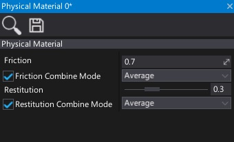

Physical Material
The Physical Material asset is used to define the response of a physical object when interacting dynamically with the world.
Create physical material
To create a new physical material asset, simply navigate to the Content directory in the Content window, then right-click and choose option New -> Physical Material. Specify its name and press Enter.

Use physical material
Physical materials are used by the colliders to define their surface properties. You can set the collider material by dragging the asset right into the Material property. Alternatively, you can modify the material at runtime using C# API (see Collider.Material property).
Properties

| Property | Description | ||||||||||
|---|---|---|---|---|---|---|---|---|---|---|---|
| Friction | The friction value of surface, controls how easily things can slide on this surface. The default value is 0.7. |
||||||||||
| Friction Combine Mode | The friction combine mode, controls how friction is computed for multiple materials. Possible options:
|
||||||||||
| Restitution | The restitution or 'bounciness' of this surface, between 0 (no bounce) and 1 (outgoing velocity is same as incoming). The default value is 0.3. |
||||||||||
| Restitution Combine Mode | The restitution combine mode, controls how restitution is computed for multiple materials. Possible options:
|